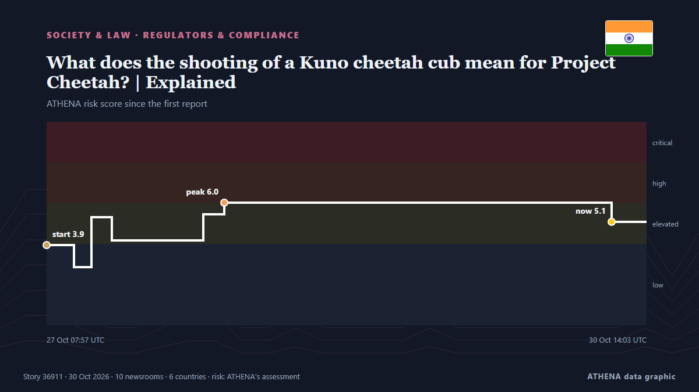

Ρυθμιστικές αρχές
| 18 Οκτ | 0 |
|---|---|
| 19 Οκτ | 0 |
| 20 Οκτ | 0 |
| 21 Οκτ | 0 |
| 22 Οκτ | 1 |
| 23 Οκτ | 0 |
| 24 Οκτ | 0 |
| 25 Οκτ | 0 |
| 26 Οκτ | 0 |
| 27 Οκτ | 5 |
| 28 Οκτ | 4 |
| 29 Οκτ | 2 |
| 30 Οκτ | 3 |
| 31 Οκτ | 0 |
Οι τίτλοι των ειδήσεων παρουσιάζονται στα αγγλικά, όπως δημοσιεύτηκαν.

What does the shooting of a Kuno cheetah cub mean for Project Cheetah? | Explained
A 19-month-old male cub, KNG22, died on Tuesday (October 27, 2026) after being shot outside Kuno National Park, the first such case since Project Cheetah began in 2022; the Centre and Madhya Pradesh… από The Hindu
Homes evacuated in Shankill area as terrorism probe launched
Items recovered as 35-year-old man detained on Friday. από The Irish News (Belfast)
Communications watchdog fines Google, Apple over in-app payment policies
SEOUL, Oct. 28 (Yonhap) -- South Korea's broadcasting and telecommunications reg... από Yonhap (English)
Galatasaray edge Fenerbahce 2-1 as Osimhen delivers derby double
Nigerian striker scores twice in first half as reigning champions hold off Yellow Canaries' second-half fightback. από Anadolu Agency (English)
Pentagon IG refuses to investigate Starlink/Starshield slowdown in Ukraine
Inspector general rejected request from Democratic and Republican senators. από Ars Technica
Controversial Islamic cleric shot dead in northern Nigeria
Yahaya Masussuka had posted videos in which he rejected some elements of mainstream Islam. από BBC News
Police close investigation into Hayden Panettiere’s death
Police in South Carolina close their investigation into the overdose death of the actor, following a coroner's finding that it was accidental. από ABC News Australia
Niger Miners’ Saga: NSCDC death cell cleaned to destroy evidence, probe panel member says
Deji Adeyanju says the NSCDC detention cell in Minna was cleaned, disinfected and renumbered after the deaths of detainees in an alleged attempt to destroy evidence. από Premium Times
Consumer protection regulator imposes ₹1 lakh fine on Sunrise Foods over ‘100% whole wheat bread’ claim
Greece’s market authority imposed €659,647 in fines in October 2026, including penalties for excessive meat profit margins, consumer protection breaches and counterfeit goods. από Greek City Times
ADC asks Tinubu to probe alleged payments for appointments
The Makinde-Daura Presidential Campaign Organisation has called on the Economic and Financial Crimes Commission (EFCC) to investigate allegations that serving ministers paid billions of naira to… από Vanguard